The perfect tool for achieving different Texture Faux Finishes with glazes or paint.
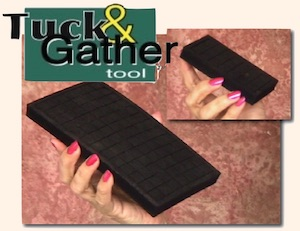
Included with Basic Faux Painting Kit. Textured Faux Painting is very popular today. With other methods, it can be very time consuming, requiring the use of expensive painting mediums or plasters. With the Tuck and Gather Tool© and the Multi Color Faux Palette©, you can achieve the look of texture without the extra costs. As part of the Triple S Faux System©, you can save time and money without compromising the elegant look of texture on your walls. Faux Ragging in multiple colors can also be done with less mess and steps.
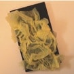
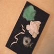
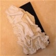
Just use any blunt item like a screwdriver to tuck and gather material onto the tool.
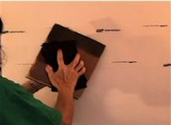
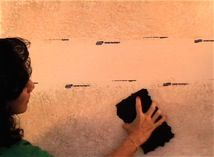
Once tool is prepared, the just press onto Multi Color Faux Palette and apply to wall. It's that easy! No more blotting on paper, either.
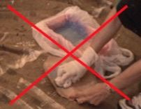
Using a rag, cloth, or plastic is just one type of material you can use to add beautiful dimensional texture to any wall. On the left below, is the board and on the right, is the finished bathroom. Nice!
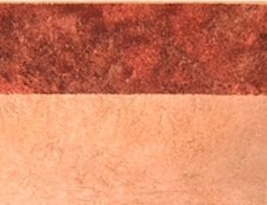
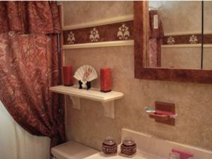
If you faux paint a color wash, you can then add some texture to it with the tuck and gather tool to get more dimension. Take a look at the pictures below.
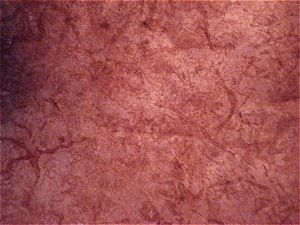
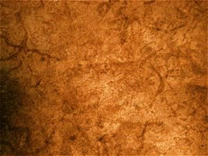
Our BASIC KIT INCLUDES Multi Color Faux Palette, 2 Poofy Pads, 2 Tuck and Gather tools and Workshop DVD. It's now on sale for only $39.99 for a limited time.


(This kit includes Basic, Faux Marble, Faux Wood Kit and tools for texturing)
*FREE Priority Shipping and Color Idea E-book